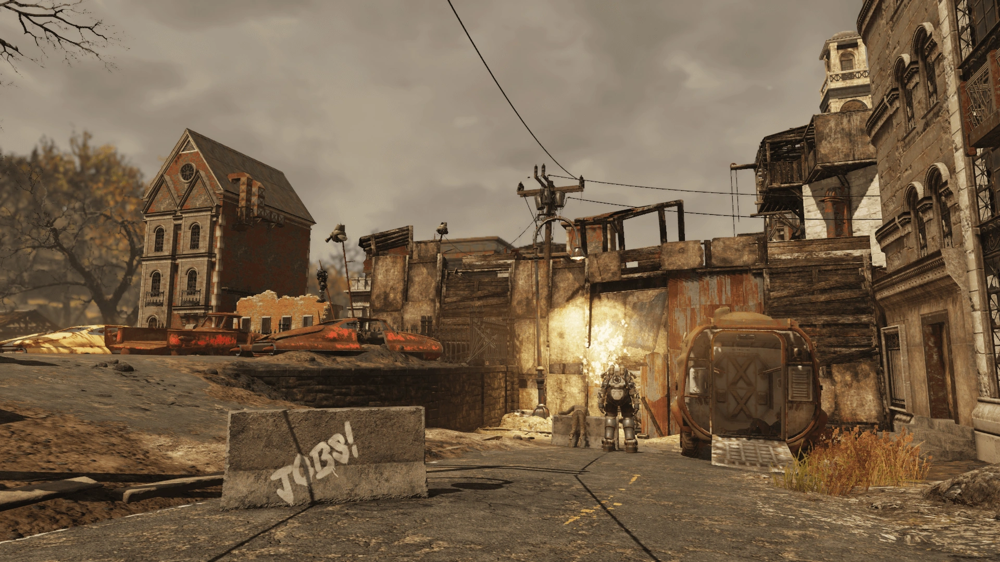
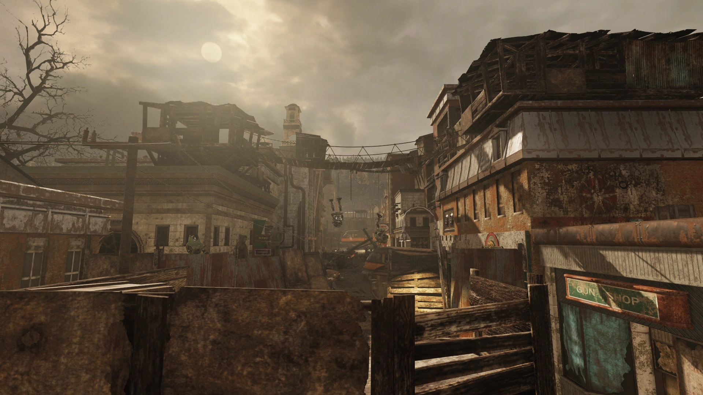

ベックリー
概要
ベックリーはアパラチアの灰の山リージョンにある町である。
背景
1838年に創設されたベックリーは、近くの炭鉱を中心に発展した。
炭鉱が閉鎖された後、その歴史を展示する博物館が近くにオープンした。
この町はシャノン・リバーズの生誕地として知られており、彼女は「ミストレス・オブ・ミステリー」の声優として最も広く知られていた。
2077年、町は地元の2つのサンドイッチ店——サルズ・グラインダーズとビッグ・パパ・モーズ——の激しい競争に巻き込まれていた。
また、ホーンライト・インダストリアルがベックリー北部で新型空気清浄機のデモンストレーションを行っていた。
さらに、この町はアパラチアと近隣の町ウェルチを巻き込む労働争議の最中にあった。
労働者たちはアトミック・マイニング・サービスとホーンライト・インダストリアルに対し、彼らの人間の労働力をロボットで置き換えようとする行為に反対して戦っていた。
大戦時、州兵がハルシゲン・ガスの使用やRobCoのストライクブレーカー・ロボットの展開によって暴動を鎮圧するために投入された。
彼らの命令はデモ参加者を鎮圧するか殺すことだった。
大戦後、鉱夫たちのバリケードの残骸はまだ残っており、特に町の北側で顕著だった。
これらの防御はレイダーによってさらに強化されたが、2102年までに殺されるか追い出された。
レイアウト
ベックリーは灰の山のかなり大きな町で、ルイスバーグやハーパーズ・フェリーと同程度の規模である。
主な見どころはサルズ・グラインダーズとビッグ・パパ・モーズ、そして町の西側にあるベックリー炭鉱展示場である。
町は軸線的な設計で、カナワ・ストリートが南北を走る最大のメインストリートとなっている。
ストリートは戦前のバリケードで封鎖されており、破壊されたロボットや抗議の看板が飾られている。
通りの大半のビルは破壊されるか板で打ちつけられている。
サルズ・グラインダーズは通りの右手に入口があり、ここからベックリーの上層階にアクセスできる。
屋上は戦前の木造小屋が散在しており、一方の列ともう一方をつなぐ橋が架けられている。
小屋の周りにはベッドやクラフトステーション（武器作業台、化学ステーション、料理ステーション）がある。
町にはストライクブレーカー・ロボット（アイボット、プロテクトロン、ミスター・ガッツィー、ロボブレイン）がまだ巡回しており、フェラル・グールが屋上に潜んでいる。
主なアイテム
- 警告 — メモ、サルズ・グラインダーズの向かいのビルの屋上テーブル上。
- トップ・オブ・ザ・ワールド広告パケット — ホロテープ、町の東側のギフトショップのカウンター上。
- Vault-Tecからの手紙 — メモ、町の南側の壊れた家の2階テーブル上。
- パワーアーマー — T-シリーズ、中央要塞の南側IFVの近く。
- ステルスボーイ — 屋上の仮設小屋、ソファの横の小さなテーブル上。
発見できるメモ
警告
これを読んでいるなら、まだ間に合ううちに逃げろ。
鉱夫たちがロボットを破壊し始めた。
ホーンライトが自分の資産を守るために介入してくるのは時間の問題だ。
ミッチェルが軍が向かっているという話を聞いたので、何人かでマウント・ブレア駅に向かっている。
人々を市外に運び出す列車があるらしい。
君もそこに向かうことを勧める。
登場作品
ベックリーはFallout 76にのみ登場する。
舞台裏
ベックリーは、実在するウエストバージニア州ベックリーをモデルにしている。
現実のベックリーにもベックリー展示炭鉱があり、ゲーム内のベックリー炭鉱展示場のモデルとなっている。
ギャラリー


ベックリーは、灰の山リージョンの中でも最も「大戦前の社会問題」が可視化されたロケーションだと思います。
カナワ・ストリートの戦前バリケードを見ると、破壊されたロボットと「ロボットに仕事を奪われるな」的な抗議の看板が一緒に置かれていて、オートメーション暴動の生々しさが伝わってきます。
屋上の木造小屋群は、暴動から逃げた人々が作った一時的な住居だったのか、それともレイダーが後から作ったものなのか、そのどちらとも解釈できる曖昧さが良い。
「警告」のメモがまた切ない。「ホーンライトが介入してくるのは時間の問題だ」「軍が向かっている」——これ、もう大戦の直前の出来事ですよね。
マウント・ブレア駅に逃げようとしていた人々は、果たして列車に乗れたのか……。
そしてシャノン・リバーズの出身地という設定も面白い。ミストレス・オブ・ミステリーの声をこの炭鉱町出身の人が担当していたというのは、現実世界でもありそうな話ですよね。
This article uses material from the Fallout wiki at Fandom and is licensed under the Creative Commons Attribution-Share Alike License.
// TERMINAL FEEDBACK